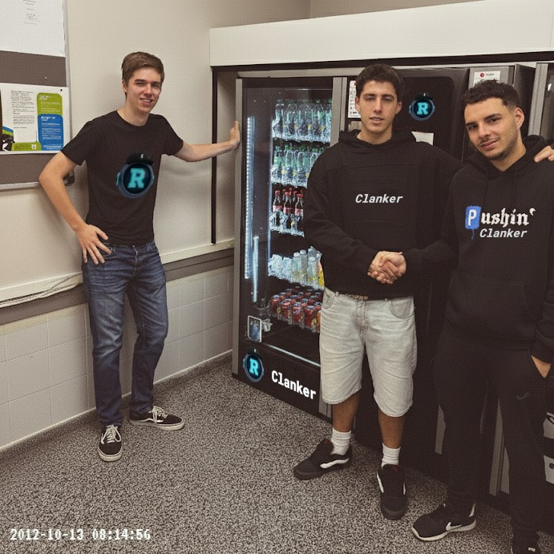

Gure Helburua
Erosotasuna eta eraginkortasuna eramatea leku guztietara, makina saltzaile adimentsu, azkarrak, konektatuak eta erraz erabiltzekoak eskainiz, egunerokoa denontzat errazagoa eginez.
Erosotasuna eta eraginkortasuna eramatea leku guztietara, makina saltzaile adimentsu, azkarrak, konektatuak eta erraz erabiltzekoak eskainiz, egunerokoa denontzat errazagoa eginez.
2025ean, "La Vending Show" saria irabazi genuen, konpetizioan enpresa
Clankerren inoiz ahaztuko ez dugun urtea izango da 2025 hau. Beren kabuz pentsatzeko eta ikasteko gai diren vending makinen proiektuak sari nagusia jaso du La Vending Show 2025 ekitaldian, sektoreko nazioarteko ekitaldirik garrantzitsuenean.
Gure Clanker makinek adimen artifiziala erabiltzen dute erabiltzaileen ohituretara egokitzeko, stocka denbora errealean optimizatzeko eta erosketa-esperientzia pertsonalizatuak eskaintzeko.
Hasieratik gure ikuspegian sinetsi zuten gure bazkide eta enpresari arabiarrei esker ona adierazi nahi diegu. Haren laguntza estrategikoa eta konfiantza funtsezkoak izan ziren teknologia hori ideia bat izateari uzteko eta gaur egun merkatu globalean joera markatzen duen errealitate bihurtzeko.
Clanker-en helburu argi batekin jarraitzen dugu lanean: mundua makinekin erlazionatzeko modua birdefinitzea. Eta sari honen ondoren, badakigu hasi besterik ez garela egiten ari.
🚀 Etorkizuna bakarrik zerbitzatzen da… eta bere kabuz pentsatzen du.Clankerren sorrera 2012an, Beñat, Bilal eta Enay lagunek makina salmentari zahar batekin izan zuten arazo batek piztu zien ideia. Kafea ez zen irteten, eta Beñatek esan zuen:
“Makinek pentsatuko balute, hau ez litzateke gertatuko.”
Horrela jaio zen Clanker: adimendun makina salmentariak sortzeko proiektua. Lehen prototipoak “clank†soinua egiten zuen, eta hortik hartu zuen izena. Gaur egun, Clankerrek makina azkarrak, konektatuak eta erabilerrazak egiten ditu, jendearen egunerokoa errazteko asmoz.
